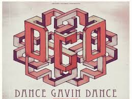

Record Label:
Dance Gavin Dance or DGD is signed with Rise Records ©
Genre:
Dance Gavin Dance is a post-hardcore band.
Members:
- Tillian Pearson: Vocals
- Will Swan & Josh Benton: Guitar
- Matt Mingus: Drums
Point of Origin:
This band is based in Sacramento, CA
Top 5 Songs:
- Lemon Meringue Tie
- Death Of The Robot With Human Hair
- Carl Barker
- The Backwards Pumpkin Song
- Tree Village